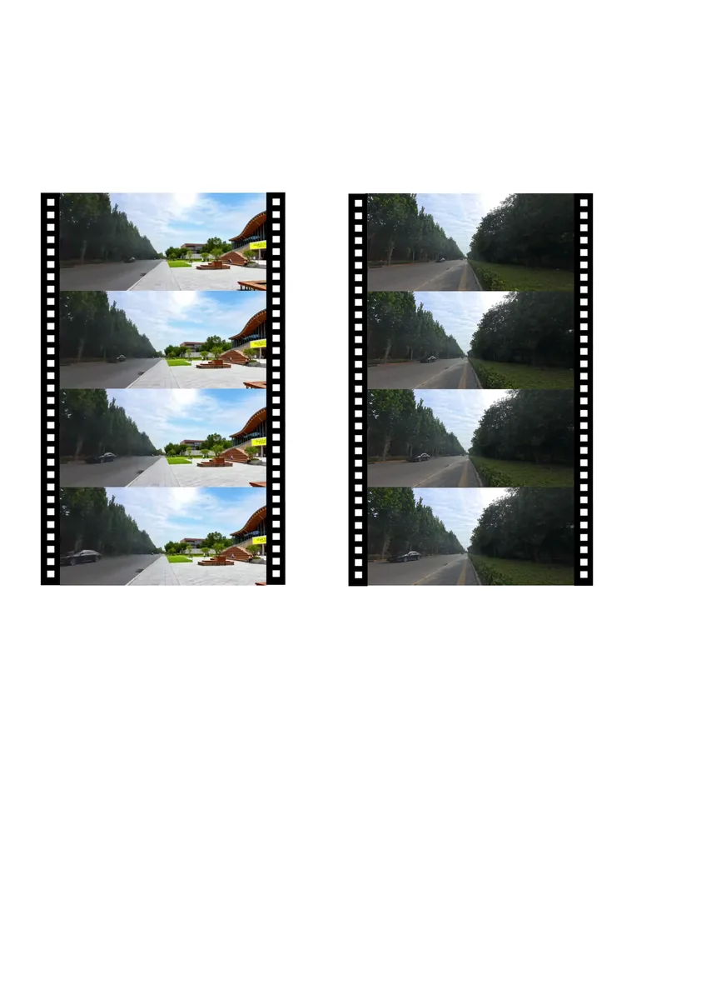

Projects
研究成果总览
从论文方法、AIGC 工作流、Rhino 建模系统到城市更新多智能体，把每个成果作为可深入阅读的案例呈现。

EditPanorama
Indoor renovation interaction and presentation through diffusion models
Stable DiffusionComfyUIControlNetInpainting

Voice-Aided Rhino Modeling
Speech or text becomes Rhino script through ASR, RAG, LLM generation, and plugin execution
ASRRAGLLMRhino Plugin

AI-Driven Street-View Video Generation
From street-view video input to controllable AI-generated urban scenes
AIGC VideoDepth MapPromptAI Image Editor

Building Multimodal AI Agents for Urban Renewal
Automated diagnosis to generative design for urban micro-space renewal
Multi-AgentVLMLLMBaidu Map API

AI-Assisted Architectural Image Analysis & Generation
Component extraction, mass simplification, Image-to-BIM/IFC, and analytical diagramming
Gemini LLMRodinBIM/IFCAIGC Diagram